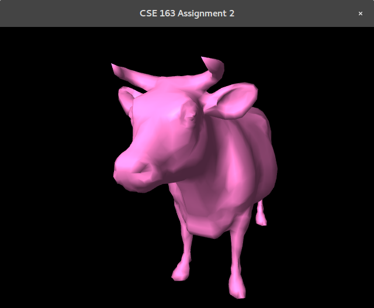
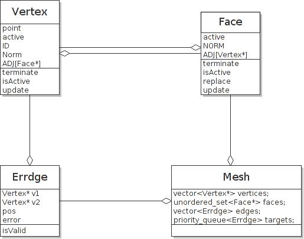
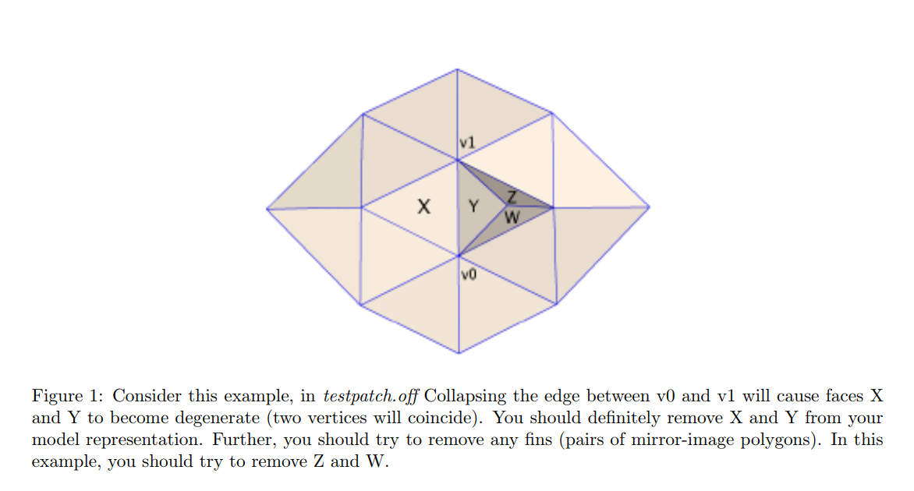
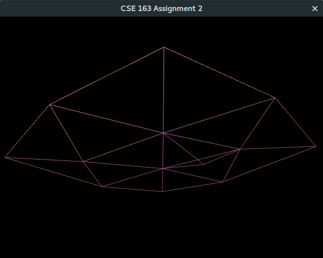
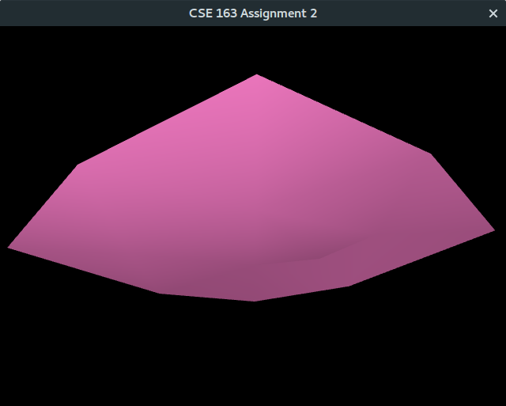
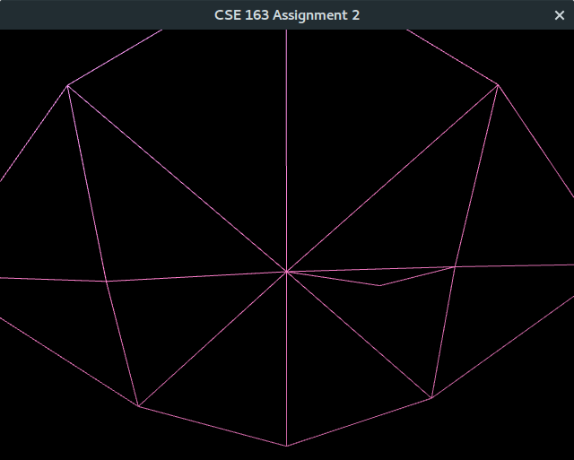
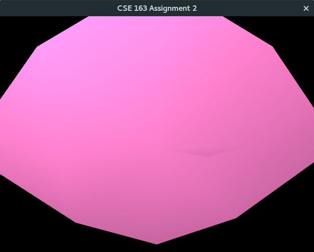
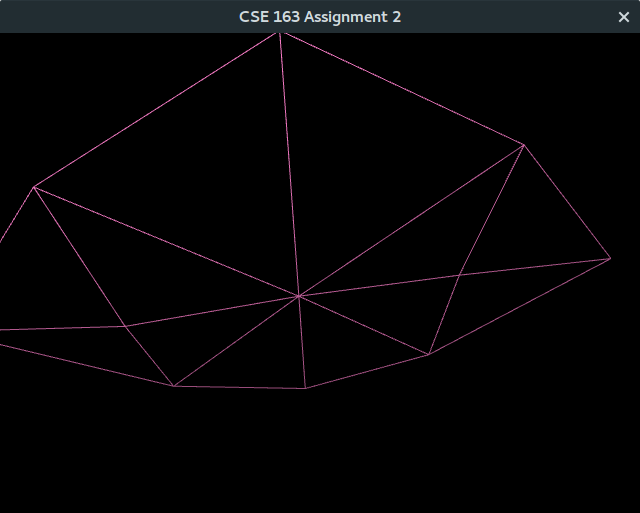
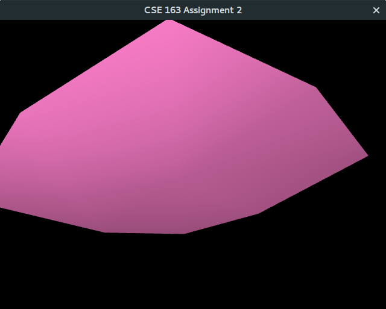

Part 1: Mesh Viewer
Related Class: Mesh, Face, Vertex, Camera
-
Skeleton Code:
The base code of our program is taken from the provided skeleton code in the previous iterations of the CSE 167 class. This code contains the basic initialization process to set up an OpenGL window. We build upon this code by adding a file parser, a Mesh class, and basic shaders. As a result, the program is able to display the model, centered and scaled to a 10x10x10 cube, on a solid black background.
-
Mesh Perception:
In order to test out the normal calculation and the mesh simplification, we need to have a way to "feel" the differences between a coarse mesh model and a fine mesh model. We conquer this goal by using a gouraud shading. Using gouraud shading, we can see the diffusive light and the specular high light varies on different faces to give us some perception of meshes structure under lighting. And also, by such approach we are able to test out our normal calculations. What's more, for better seeing the meshes structure, we enable the wireframe model in the Opengl initialization. You can toggle it by pressing 'F5' key to switch bettween the modes.

Toggle between two different mode by pressing 'F5'
-
Interaction With the Model:
To interact with the model, we create a FPS like experimence to wonder around the scence using 'w', 'a', 's' and 'd' keys to move the position and the mouse to rotate the view angles. We first set up a Camera class to calculate the view matrix according to the camera object's position in the space and its focus on the scence. We let the Camera class process our input by passing in the glfw window pointer and adjust its position and view angles according to the inputs. Then, in the game loop, before drawing, we update our View matrix using Camra object. As well as, passing, camera position to shader for rendering the light. In order for you to get the mouse out of the program, you can press 'F6' to toggle the mouse from the scene.
Part 2: Data Structure Design
Related Class: Face, Vertex, Mesh, Errdge
-
Overall View:
To implement a good data structure, the mesh manipulation is not the only one key we need to deal with. The runtime of edge collapsing and vertices splitting, the memory managements of deleting faces and vertices and the property maintaing of the connectivity can also be other three important conerns for the code to be simple and maintainable and for the program to run fast enough to do the simplication on meshes and progressive model. The follwing picture is the UML diagram of our datastructure relationships.
The connectivity information is retrived by accesing the adjacency lists of Face and Vertex objects. Each face is holding an adjacency array of the vertices pointers that is included. And, each vertercies is holding an adjacency array of the faces that included it. While Errdge is only used for storing the information of two vertercies to be collapsed, the position of new merged vertices and the corrosponding error, it has no essential role of the mesh strucutures. It can be recalculated after each removal of edges. Thus, it can be a stack objects.
UML of data structure
-
Data Import:
To begin, we use a stringstream class to read in data from the OFF files. We first create two arrays(vector) of Vertex pointers and Face pointers. For each vertex, we create a Vertex on the heap and pass in its coordinates x, y, z in the space. At the same time, we set the vertex with its index on the vector array. And, for each face, we create a Face on the heap passing in the vertiex pointers by getting them from the vertices array using index parsed from the file. After parsing, we dump all the positions from Vertices and the indices from Faces from vector to array. Then, pass the arrays to VBO and EBO for OpenGL to render the model.
-
Run-time Analysis:
-
Per Operation:
Apart from popping the "edge" with the least error which would take O(logN), anyother operation on Vertices array and Faces set only take O(N) on average
-
Total Operations:
Among each update on set and priority queue as well as dumpping, they all require O(N). O(N) for invalid vertices and faces deletion from the heap. O(N) for recalculating edges with error from faces. O(N) for building priority heap on an array. O(N) for moving data from adavanced data structures to regular array for dumpping. For edges' removals, collapsing N edges will take O(NlogN) at most.
-
-
Memory Management:
In collapsing edges function, we mark each vertercies and faces that are not going to be rendered as dead. And after removals, in updateVFsets function, we update each vertercies and faces status to remove their dead adjacent vertercies and faces from the array. Then, mark the face and vertex with 0 adjacency as dead again. Afterawrd, push each dead vertercies and faces to a set for later deletion of them from the memory. Then, we dump the rest of vertercies and faces for rendering.
Part 3: Mesh Simpification
Related Class: Face, Vertex, Mesh, Errdge
-
Edge Collapsing Function:
In our implementation, the edge collasping function take in a Errdge object. We first retrive two vertercies to be removed from the object and make a new vertex on heap by using the new positoin with least error from the object.
Let the two vertices to be removed be v1, v2 and the new vertex be v'.
For each face from v1's adjacent list, we check against all faces from v2's adjacent list. If the face doesn't include v2 vertex, we replace v1's place in adjacent list with v. We do the same thing for v2's adjacent list. If a face happens to include v1 and v2, we terminate the face. Then, add new Errdges(Edges with Error) calculated using error matrics onto priority queue. In the end, we terminate v1 and v2.
-
Corner Case(Triangle Shape's Triangle Fan):
The algorithm described above is not enough for some special cases, which can lead to a fin appear on the surface of the model making model look disasterous and also influence the error matrics calculation on some areas. See the following picture taken from the assignment write-up.
Our Solution:
We can observe from the picture that the fin is caused by two faces sharing three vertices after the edge collasping. Thus, we can further remove the faces, that includes v', which share the same three vertices
Implemnetation Detail:
After, we merge our the edges incidents to v1 & v2 to v'. We need to check the neightbor face's adjacent lists of vertices. We use a nested-for loop to compare each face against one another. We use an unoder set to keep track of all the vertices that we have seen so far. If after we insert all the vertices into the set from two different active faces, teh size still remains 3, that means we have two faces sharing three vertices. Then, we mark two faces as dead by calling terminate() function. Then, we update the neight vertices and v'.
Before Collapsing
Redandunt Faces: Fin
Perfect Solution